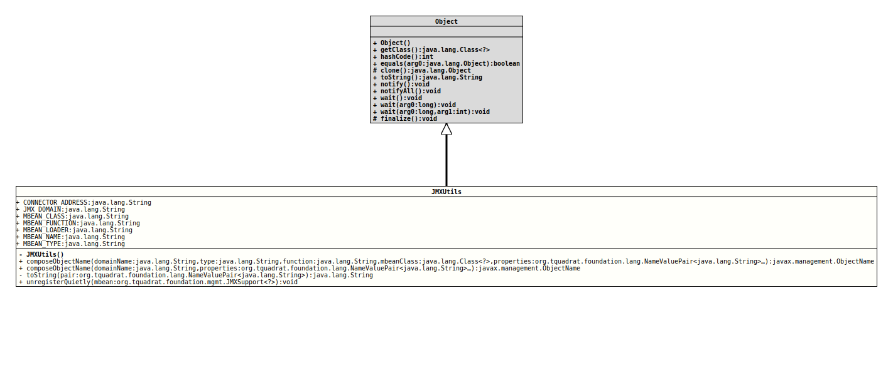

java.lang.Object
org.tquadrat.foundation.mgmt.JMXUtils
@UtilityClass
@ClassVersion(sourceVersion="$Id: JMXUtils.java 995 2022-01-23 01:09:35Z tquadrat $")
@API(status=STABLE,
since="0.0.1")
public final class JMXUtils
extends Object
This class provides some utilities that are useful in the context of JMX.
- Author:
- Thomas Thrien (thomas.thrien@tquadrat.org)
- Version:
- $Id: JMXUtils.java 995 2022-01-23 01:09:35Z tquadrat $
- Since:
- 0.0.1
- UML Diagram
-

UML Diagram for "org.tquadrat.foundation.mgmt.JMXUtils"
{kind=link}
-
Field Summary
FieldsModifier and TypeFieldDescriptionstatic final StringThe property name for the connector address: "com.sun.management.jmxremote.localConnectorAddress".static final StringThe name of the JMX domain that is used by all JMX enabled components of the library.static final StringThe property name for the class of an MBean: "class".static final StringThe property name for the function of an MBean: "function".static final StringThe property name for the loader of an MBean: "loader".static final StringThe property name for the name of an MBean: "name".static final StringThe property name for the MBean type: "type". -
Constructor Summary
Constructors -
Method Summary
Modifier and TypeMethodDescriptionstatic ObjectNamecomposeObjectName(String domainName, String type, String function, Class<?> mbeanClass, NameValuePair<String>... properties) Composes an object name from the given domain name and the given properties.static ObjectNamecomposeObjectName(String domainName, NameValuePair<String>... properties) Composes an object name from the given domain name and the given properties.private static final StringtoString(NameValuePair<String> pair) Converts an instance ofNameValuePairto a String.static voidunregisterQuietly(JMXSupport<?> mbean) Unregisters the given MBean from the MBeanServer.
-
Field Details
-
CONNECTOR_ADDRESS
The property name for the connector address: "com.sun.management.jmxremote.localConnectorAddress".- See Also:
-
JMX_DOMAIN
The name of the JMX domain that is used by all JMX enabled components of the library.- See Also:
-
MBEAN_CLASS
The property name for the class of an MBean: "class".- See Also:
-
MBEAN_FUNCTION
The property name for the function of an MBean: "function".- See Also:
-
MBEAN_LOADER
The property name for the loader of an MBean: "loader".- See Also:
-
MBEAN_NAME
The property name for the name of an MBean: "name".- See Also:
-
MBEAN_TYPE
The property name for the MBean type: "type".- See Also:
-
-
Constructor Details
-
JMXUtils
private JMXUtils()No instance allowed for this class.
-
-
Method Details
-
composeObjectName
@SafeVarargs @API(status=STABLE, since="0.0.1") public static ObjectName composeObjectName(String domainName, String type, String function, Class<?> mbeanClass, NameValuePair<String>... properties) throws MalformedObjectNameException Composes an object name from the given domain name and the given properties.
The object name has the form
<Domain>:type=<Type>,function=<Function>[, class=<Class>][,…]The type is something like a category.
The function is a description for what the MBean does.
The class can be provided, if multiple MBean implementations with the same type and function will be loaded.
Additional properties in the form
<name>=<value>can be added as required.- Parameters:
domainName- The domain name.type- The type of the MBean that will be named with the new object name.function- The function of the MBean.mbeanClass- The MBean's class; can benull.properties- Additional properties as name-value-pairs; can benull.- Returns:
- The object name.
- Throws:
MalformedObjectNameException- It is not possible to create a valid object name from the given domain name and properties.
-
composeObjectName
@SafeVarargs @API(status=STABLE, since="0.0.1") public static ObjectName composeObjectName(String domainName, NameValuePair<String>... properties) throws MalformedObjectNameException Composes an object name from the given domain name and the given properties.- Parameters:
domainName- The domain name.properties- The properties as name-value-pairs; at least one property has to be provided.- Returns:
- The object name.
- Throws:
MalformedObjectNameException- It is not possible to create a valid object name from the given domain name and properties.
-
toString
Converts an instance ofNameValuePairto a String.- Parameters:
pair- The name-value-pair.- Returns:
- The String representation of the name-value-pair.
-
unregisterQuietly
Unregisters the given MBean from the MBeanServer. All exceptions – if any – will be swallowed silently.- Parameters:
mbean- The mbean to unregister; may benull.
-